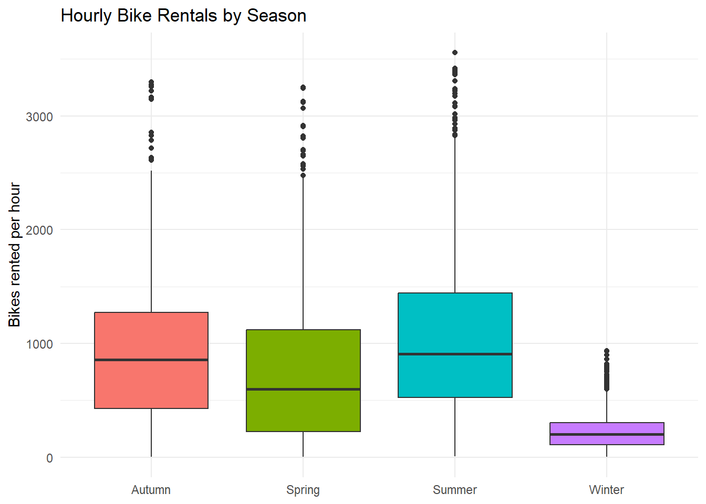
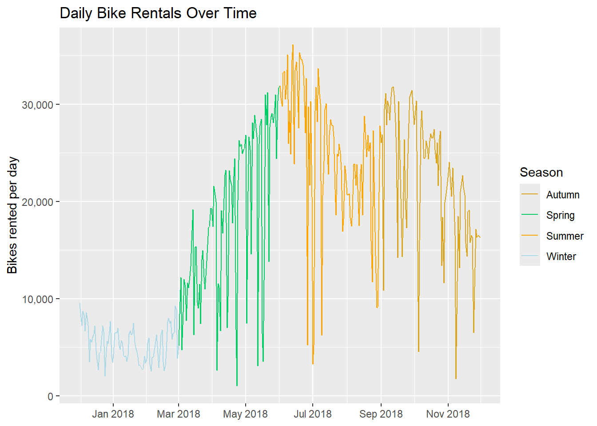
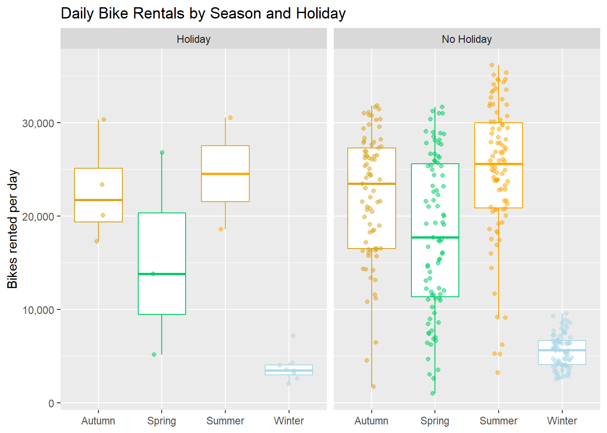
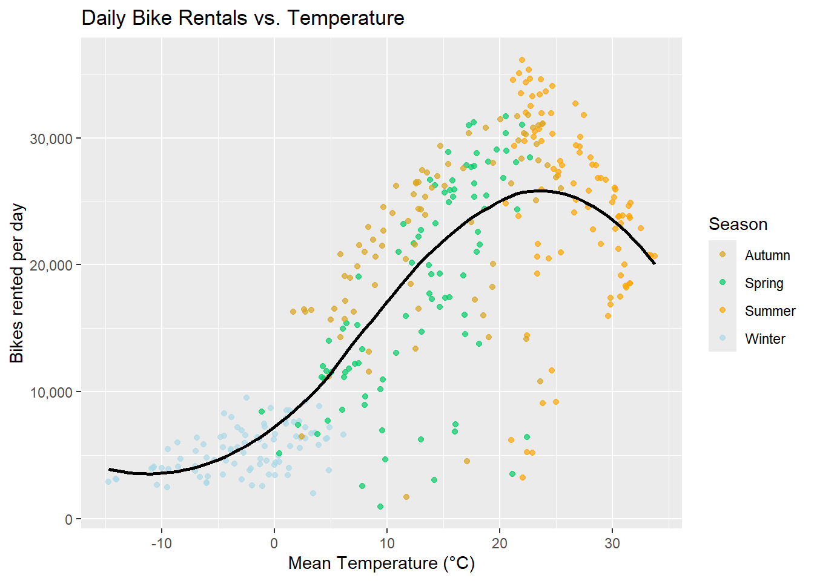
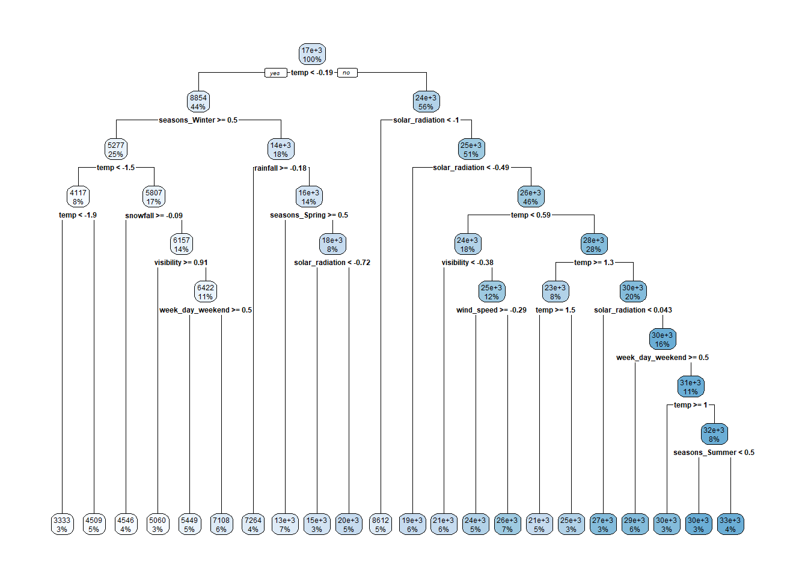
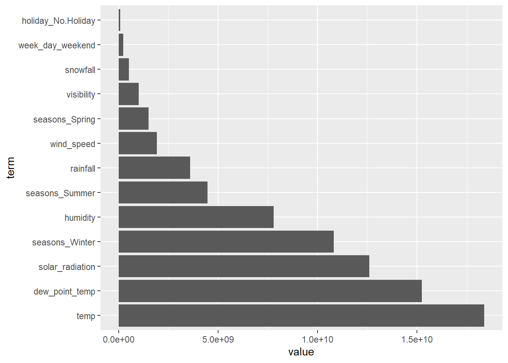

library(tidyverse)
library(tidymodels)
library(lubridate)
library(rsample)
library(janitor)
library(yardstick)
library(baguette)
library(ranger)
library(rpart)
library(rpart.plot)ST558_HW10_Yefrid
Reading the Data
We read the data from a local copy of the CSV saved in the repo, so rendering doesn’t depend on the course website being up. The file is latin1 encoded, not UTF-8: the degree symbols in names like Temperature(°C) make read_csv() throw invalid multibyte string unless we set the encoding in locale().
We also run janitor::clean_names() right away. It converts every column to lower snake case and strips out the degree symbol, so we never have to type the original names with backticks.
bike_raw <- read_csv("SeoulBikeData.csv", locale = locale(encoding = "latin1")) |>
clean_names() |>
as_tibble()Rows: 8760 Columns: 14
── Column specification ────────────────────────────────────────────────────────
Delimiter: ","
chr (4): Date, Seasons, Holiday, Functioning Day
dbl (10): Rented Bike Count, Hour, Temperature(°C), Humidity(%), Wind speed ...
ℹ Use `spec()` to retrieve the full column specification for this data.
ℹ Specify the column types or set `show_col_types = FALSE` to quiet this message.bike_raw# A tibble: 8,760 × 14
date rented_bike_count hour temperature_c humidity_percent wind_speed_m_s
<chr> <dbl> <dbl> <dbl> <dbl> <dbl>
1 01/12/… 254 0 -5.2 37 2.2
2 01/12/… 204 1 -5.5 38 0.8
3 01/12/… 173 2 -6 39 1
4 01/12/… 107 3 -6.2 40 0.9
5 01/12/… 78 4 -6 36 2.3
6 01/12/… 100 5 -6.4 37 1.5
7 01/12/… 181 6 -6.6 35 1.3
8 01/12/… 460 7 -7.4 38 0.9
9 01/12/… 930 8 -7.6 37 1.1
10 01/12/… 490 9 -6.5 27 0.5
# ℹ 8,750 more rows
# ℹ 8 more variables: visibility_10m <dbl>, dew_point_temperature_c <dbl>,
# solar_radiation_mj_m2 <dbl>, rainfall_mm <dbl>, snowfall_cm <dbl>,
# seasons <chr>, holiday <chr>, functioning_day <chr>EDA
Checking the Data
1. Missingness
First, check each column for missing values.
colSums(is.na(bike_raw)) date rented_bike_count hour
0 0 0
temperature_c humidity_percent wind_speed_m_s
0 0 0
visibility_10m dew_point_temperature_c solar_radiation_mj_m2
0 0 0
rainfall_mm snowfall_cm seasons
0 0 0
holiday functioning_day
0 0 No column has any missing values, so nothing needs to be fixed or imputed.
2. Column Types and Values
Next, check that the column types make sense.
glimpse(bike_raw)Rows: 8,760
Columns: 14
$ date <chr> "01/12/2017", "01/12/2017", "01/12/2017", "01/…
$ rented_bike_count <dbl> 254, 204, 173, 107, 78, 100, 181, 460, 930, 49…
$ hour <dbl> 0, 1, 2, 3, 4, 5, 6, 7, 8, 9, 10, 11, 12, 13, …
$ temperature_c <dbl> -5.2, -5.5, -6.0, -6.2, -6.0, -6.4, -6.6, -7.4…
$ humidity_percent <dbl> 37, 38, 39, 40, 36, 37, 35, 38, 37, 27, 24, 21…
$ wind_speed_m_s <dbl> 2.2, 0.8, 1.0, 0.9, 2.3, 1.5, 1.3, 0.9, 1.1, 0…
$ visibility_10m <dbl> 2000, 2000, 2000, 2000, 2000, 2000, 2000, 2000…
$ dew_point_temperature_c <dbl> -17.6, -17.6, -17.7, -17.6, -18.6, -18.7, -19.…
$ solar_radiation_mj_m2 <dbl> 0.00, 0.00, 0.00, 0.00, 0.00, 0.00, 0.00, 0.00…
$ rainfall_mm <dbl> 0, 0, 0, 0, 0, 0, 0, 0, 0, 0, 0, 0, 0, 0, 0, 0…
$ snowfall_cm <dbl> 0, 0, 0, 0, 0, 0, 0, 0, 0, 0, 0, 0, 0, 0, 0, 0…
$ seasons <chr> "Winter", "Winter", "Winter", "Winter", "Winte…
$ holiday <chr> "No Holiday", "No Holiday", "No Holiday", "No …
$ functioning_day <chr> "Yes", "Yes", "Yes", "Yes", "Yes", "Yes", "Yes…date, seasons, holiday, and functioning_day were read in as characters. date needs to become a real date and the other three need to become factors. Everything else is numeric, as expected.
Basic summary statistics for the numeric columns:
bike_raw |>
select(where(is.numeric)) |>
summary() rented_bike_count hour temperature_c humidity_percent
Min. : 0.0 Min. : 0.00 Min. :-17.80 Min. : 0.00
1st Qu.: 191.0 1st Qu.: 5.75 1st Qu.: 3.50 1st Qu.:42.00
Median : 504.5 Median :11.50 Median : 13.70 Median :57.00
Mean : 704.6 Mean :11.50 Mean : 12.88 Mean :58.23
3rd Qu.:1065.2 3rd Qu.:17.25 3rd Qu.: 22.50 3rd Qu.:74.00
Max. :3556.0 Max. :23.00 Max. : 39.40 Max. :98.00
wind_speed_m_s visibility_10m dew_point_temperature_c solar_radiation_mj_m2
Min. :0.000 Min. : 27 Min. :-30.600 Min. :0.0000
1st Qu.:0.900 1st Qu.: 940 1st Qu.: -4.700 1st Qu.:0.0000
Median :1.500 Median :1698 Median : 5.100 Median :0.0100
Mean :1.725 Mean :1437 Mean : 4.074 Mean :0.5691
3rd Qu.:2.300 3rd Qu.:2000 3rd Qu.: 14.800 3rd Qu.:0.9300
Max. :7.400 Max. :2000 Max. : 27.200 Max. :3.5200
rainfall_mm snowfall_cm
Min. : 0.0000 Min. :0.00000
1st Qu.: 0.0000 1st Qu.:0.00000
Median : 0.0000 Median :0.00000
Mean : 0.1487 Mean :0.07507
3rd Qu.: 0.0000 3rd Qu.:0.00000
Max. :35.0000 Max. :8.80000 The ranges look valid. Humidity is between 0 and 98%, hours run from 0 to 23, and rainfall, snowfall, and bike counts are never negative. Bike count has a long right tail (the max is far above the median), which we look at below.
Unique values and counts for the categorical columns:
table(bike_raw$seasons, useNA = "ifany")
Autumn Spring Summer Winter
2184 2208 2208 2160 table(bike_raw$holiday, useNA = "ifany")
Holiday No Holiday
432 8328 table(bike_raw$functioning_day, useNA = "ifany")
No Yes
295 8465 The values are clean, with no typos or blanks. We also check whether holidays and non-functioning days overlap:
xtabs(~ holiday + functioning_day, data = bike_raw) functioning_day
holiday No Yes
Holiday 24 408
No Holiday 271 80573. Convert the Date
The dates are in day/month/year format, so we use dmy() from lubridate. We then confirm nothing failed to parse and check the date range.
bike_raw <- bike_raw |>
mutate(date = dmy(date))
sum(is.na(bike_raw$date))[1] 0range(bike_raw$date)[1] "2017-12-01" "2018-11-30"Every date parsed, and the data covers one year, from December 2017 through November 2018.
4. Convert Character Variables to Factors
bike_raw <- bike_raw |>
mutate(across(c(seasons, holiday, functioning_day), as.factor))
str(bike_raw |> select(seasons, holiday, functioning_day))tibble [8,760 × 3] (S3: tbl_df/tbl/data.frame)
$ seasons : Factor w/ 4 levels "Autumn","Spring",..: 4 4 4 4 4 4 4 4 4 4 ...
$ holiday : Factor w/ 2 levels "Holiday","No Holiday": 2 2 2 2 2 2 2 2 2 2 ...
$ functioning_day: Factor w/ 2 levels "No","Yes": 2 2 2 2 2 2 2 2 2 2 ...5. Rename Variables
clean_names() already gave us snake case names, but some include units and are long (dew_point_temperature_c, solar_radiation_mj_m2). We shorten them to make the modeling code easier to read.
bike_data <- bike_raw |>
rename(
bike_count = rented_bike_count,
temp = temperature_c,
humidity = humidity_percent,
wind_speed = wind_speed_m_s,
visibility = visibility_10m,
dew_point_temp = dew_point_temperature_c,
solar_radiation = solar_radiation_mj_m2,
rainfall = rainfall_mm,
snowfall = snowfall_cm
)
names(bike_data) [1] "date" "bike_count" "hour" "temp"
[5] "humidity" "wind_speed" "visibility" "dew_point_temp"
[9] "solar_radiation" "rainfall" "snowfall" "seasons"
[13] "holiday" "functioning_day"6. Summary Statistics
To avoid repeating the same summarize() code for each grouping, we write a helper that summarizes bike count by whatever grouping variables we pass it.
bike_summary <- function(data, ...) {
data |>
group_by(...) |>
summarize(
n = n(),
total = sum(bike_count),
mean = mean(bike_count),
sd = sd(bike_count),
min = min(bike_count),
median = median(bike_count),
max = max(bike_count),
.groups = "drop"
)
}Across seasons:
bike_data |> bike_summary(seasons)# A tibble: 4 × 8
seasons n total mean sd min median max
<fct> <int> <dbl> <dbl> <dbl> <dbl> <dbl> <dbl>
1 Autumn 2184 1790002 820. 651. 0 764. 3298
2 Spring 2208 1611909 730. 622. 0 583 3251
3 Summer 2208 2283234 1034. 690. 9 906. 3556
4 Winter 2160 487169 226. 150. 3 203 937Summer has the highest mean rentals, followed by autumn, spring, and winter.
Across holidays:
bike_data |> bike_summary(holiday)# A tibble: 2 × 8
holiday n total mean sd min median max
<fct> <int> <dbl> <dbl> <dbl> <dbl> <dbl> <dbl>
1 Holiday 432 215895 500. 571. 0 240 2400
2 No Holiday 8328 5956419 715. 647. 0 524. 3556More bikes are rented on non-holidays than on holidays.
Across functioning days:
bike_data |> bike_summary(functioning_day)# A tibble: 2 × 8
functioning_day n total mean sd min median max
<fct> <int> <dbl> <dbl> <dbl> <dbl> <dbl> <dbl>
1 No 295 0 0 0 0 0 0
2 Yes 8465 6172314 729. 642. 2 542 3556When functioning_day is No, the bike count is always 0: the system wasn’t running, so no bikes could be rented. These rows tell us nothing about demand, so we drop them and keep only functioning hours.
bike_data <- bike_data |>
filter(functioning_day == "Yes") |>
select(-functioning_day)
nrow(bike_data)[1] 8465Before collapsing to daily data, we check whether the very high hourly counts look like data entry errors:
ggplot(bike_data, aes(x = seasons, y = bike_count, fill = seasons)) +
geom_boxplot(show.legend = FALSE) +
theme_minimal() +
labs(
title = "Hourly Bike Rentals by Season",
x = NULL,
y = "Bikes rented per hour"
)
The high counts look legitimate. They’re less common, but they show up in every season, so no single season accounts for all of them. Winter’s whole distribution sits much lower than the other three seasons.
7. Summarize Across Hours
To simplify the analysis, we collapse the hourly data to one row per day. Bike count, rainfall, and snowfall are summed across the day, and the other weather variables are averaged.
bike_daily <- bike_data |>
group_by(date, seasons, holiday) |>
summarize(
across(c(bike_count, rainfall, snowfall), sum),
across(c(temp, humidity, wind_speed, visibility, dew_point_temp, solar_radiation), mean),
.groups = "drop"
)
bike_daily# A tibble: 353 × 12
date seasons holiday bike_count rainfall snowfall temp humidity
<date> <fct> <fct> <dbl> <dbl> <dbl> <dbl> <dbl>
1 2017-12-01 Winter No Holiday 9539 0 0 -2.45 45.9
2 2017-12-02 Winter No Holiday 8523 0 0 1.32 62.0
3 2017-12-03 Winter No Holiday 7222 4 0 4.88 81.5
4 2017-12-04 Winter No Holiday 8729 0.1 0 -0.304 52.5
5 2017-12-05 Winter No Holiday 8307 0 0 -4.46 36.4
6 2017-12-06 Winter No Holiday 6669 1.3 8.6 0.0458 70.8
7 2017-12-07 Winter No Holiday 8549 0 10.4 1.09 67.5
8 2017-12-08 Winter No Holiday 8032 0 0 -3.82 41.8
9 2017-12-09 Winter No Holiday 7233 0 0 -0.846 46
10 2017-12-10 Winter No Holiday 3453 4.1 32.5 1.19 69.7
# ℹ 343 more rows
# ℹ 4 more variables: wind_speed <dbl>, visibility <dbl>, dew_point_temp <dbl>,
# solar_radiation <dbl>The daily data has 353 days. This is the data we analyze from here on.
8. Summaries and Plots on the Daily Data
Recreate the summary statistics on the daily data.
bike_daily |>
select(where(is.numeric)) |>
summary() bike_count rainfall snowfall temp
Min. : 977 Min. : 0.000 Min. : 0.000 Min. :-14.738
1st Qu.: 6967 1st Qu.: 0.000 1st Qu.: 0.000 1st Qu.: 3.304
Median :18563 Median : 0.000 Median : 0.000 Median : 13.738
Mean :17485 Mean : 3.576 Mean : 1.863 Mean : 12.776
3rd Qu.:26285 3rd Qu.: 0.500 3rd Qu.: 0.000 3rd Qu.: 22.592
Max. :36149 Max. :95.500 Max. :78.700 Max. : 33.742
humidity wind_speed visibility dew_point_temp
Min. :22.25 Min. :0.6625 Min. : 214.3 Min. :-27.750
1st Qu.:47.58 1st Qu.:1.3042 1st Qu.:1087.0 1st Qu.: -5.188
Median :57.17 Median :1.6583 Median :1557.8 Median : 4.612
Mean :58.17 Mean :1.7261 Mean :1434.0 Mean : 3.954
3rd Qu.:67.71 3rd Qu.:1.9542 3rd Qu.:1874.3 3rd Qu.: 14.921
Max. :95.88 Max. :4.0000 Max. :2000.0 Max. : 25.038
solar_radiation
Min. :0.02917
1st Qu.:0.28333
Median :0.56500
Mean :0.56773
3rd Qu.:0.82000
Max. :1.21667 bike_daily |> bike_summary(seasons)# A tibble: 4 × 8
seasons n total mean sd min median max
<fct> <int> <dbl> <dbl> <dbl> <dbl> <dbl> <dbl>
1 Autumn 81 1790002 22099. 6711. 1721 23350 31809
2 Spring 90 1611909 17910. 8357. 977 17590 31681
3 Summer 92 2283234 24818. 7297. 3231 25572. 36149
4 Winter 90 487169 5413. 1808. 2014 5498 9539bike_daily |> bike_summary(holiday)# A tibble: 2 × 8
holiday n total mean sd min median max
<fct> <int> <dbl> <dbl> <dbl> <dbl> <dbl> <dbl>
1 Holiday 17 215895 12700. 10504. 2014 7184 30498
2 No Holiday 336 5956419 17727. 9862. 977 19104. 36149bike_daily |> bike_summary(seasons, holiday)# A tibble: 8 × 9
seasons holiday n total mean sd min median max
<fct> <fct> <int> <dbl> <dbl> <dbl> <dbl> <dbl> <dbl>
1 Autumn Holiday 4 91018 22754. 5642. 17259 21705 30349
2 Autumn No Holiday 77 1698984 22065. 6792. 1721 23472 31809
3 Spring Holiday 3 45742 15247. 10917. 5132 13790 26820
4 Spring No Holiday 87 1566167 18002. 8322. 977 17730 31681
5 Summer Holiday 2 49063 24532. 8438. 18565 24532. 30498
6 Summer No Holiday 90 2234171 24824. 7324. 3231 25572. 36149
7 Winter Holiday 8 30072 3759 1561. 2014 3454. 7184
8 Winter No Holiday 82 457097 5574. 1757. 2487 5609 9539The order holds on the daily data: summer has the most rentals and winter has by far the fewest. Holidays still have fewer rentals than regular days, but there are only a handful of holidays in each season.
Correlations
Correlations between all the numeric variables:
bike_daily |>
select(where(is.numeric)) |>
cor() |>
round(2) bike_count rainfall snowfall temp humidity wind_speed
bike_count 1.00 -0.24 -0.27 0.75 0.04 -0.19
rainfall -0.24 1.00 -0.02 0.14 0.53 -0.10
snowfall -0.27 -0.02 1.00 -0.27 0.07 0.02
temp 0.75 0.14 -0.27 1.00 0.40 -0.26
humidity 0.04 0.53 0.07 0.40 1.00 -0.23
wind_speed -0.19 -0.10 0.02 -0.26 -0.23 1.00
visibility 0.17 -0.22 -0.10 0.00 -0.56 0.21
dew_point_temp 0.65 0.26 -0.21 0.96 0.63 -0.29
solar_radiation 0.74 -0.32 -0.23 0.55 -0.27 0.10
visibility dew_point_temp solar_radiation
bike_count 0.17 0.65 0.74
rainfall -0.22 0.26 -0.32
snowfall -0.10 -0.21 -0.23
temp 0.00 0.96 0.55
humidity -0.56 0.63 -0.27
wind_speed 0.21 -0.29 0.10
visibility 1.00 -0.15 0.27
dew_point_temp -0.15 1.00 0.38
solar_radiation 0.27 0.38 1.00To make the relationship with the response easier to read, here is each variable’s correlation with bike count in one row:
bike_daily |>
summarize(across(where(is.numeric) & !bike_count, ~ round(cor(bike_count, .x), 2)))# A tibble: 1 × 8
rainfall snowfall temp humidity wind_speed visibility dew_point_temp
<dbl> <dbl> <dbl> <dbl> <dbl> <dbl> <dbl>
1 -0.24 -0.27 0.75 0.04 -0.19 0.17 0.65
# ℹ 1 more variable: solar_radiation <dbl>Temperature, solar radiation, and dew point temperature have strong positive correlations with bike count. Rainfall, snowfall, and wind speed are negatively correlated with it. Temperature and dew point temperature are also very highly correlated with each other, so they carry a lot of the same information.
Plots
We use the same season colors in every plot.
season_colors <- c(
Winter = "lightblue",
Spring = "springgreen3",
Summer = "orange",
Autumn = "goldenrod"
)Daily bike rentals over the year:
ggplot(bike_daily, aes(date, bike_count, color = seasons)) +
geom_line(aes(group = 1), linewidth = 0.5) +
scale_color_manual(values = season_colors) +
scale_y_continuous(labels = scales::label_comma()) +
scale_x_date(date_breaks = "2 months", date_labels = "%b %Y") +
labs(
title = "Daily Bike Rentals Over Time",
x = NULL,
y = "Bikes rented per day",
color = "Season"
)
Rentals follow the seasons. They peak in early summer and again in early fall, and drop off sharply in winter.
Bike rentals by season and holiday:
ggplot(bike_daily, aes(seasons, bike_count, color = seasons)) +
geom_boxplot(outlier.shape = NA) +
geom_jitter(width = 0.15, height = 0, alpha = 0.5, size = 1.5) +
facet_wrap(~ holiday) +
scale_color_manual(values = season_colors, guide = "none") +
scale_y_continuous(labels = scales::label_comma()) +
labs(
title = "Daily Bike Rentals by Season and Holiday",
x = NULL,
y = "Bikes rented per day"
)
The points show how few holidays there are in each season, so the holiday boxplots are based on very little data.
Daily bike rentals against temperature:
ggplot(bike_daily, aes(temp, bike_count)) +
geom_point(aes(color = seasons), alpha = 0.7) +
geom_smooth(method = "loess", se = FALSE, color = "black") +
scale_color_manual(values = season_colors) +
scale_y_continuous(labels = scales::label_comma()) +
labs(
title = "Daily Bike Rentals vs. Temperature",
x = "Mean Temperature (°C)",
y = "Bikes rented per day",
color = "Season"
)
Rentals rise with temperature, peak around 25°C, and dip on the hottest days. That curve suggests a squared temperature term may help, which Model 3 tests.
Daily bike rentals against rainfall:
ggplot(bike_daily, aes(rainfall, bike_count)) +
geom_point(alpha = 0.6) +
scale_y_continuous(labels = scales::label_comma()) +
labs(
title = "Daily Bike Rentals vs. Rainfall",
x = "Total Rainfall (mm)",
y = "Bikes rented per day"
)
Most days have no rain. On days with any notable rain, rentals tend to be low.
Daily bike rentals against solar radiation:
ggplot(bike_daily, aes(solar_radiation, bike_count)) +
geom_point(alpha = 0.6, color = "orange") +
scale_y_continuous(labels = scales::label_comma()) +
labs(
title = "Daily Bike Rentals vs. Solar Radiation",
x = "Mean Solar Radiation (MJ/m²)",
y = "Bikes rented per day"
)
Sunnier days have more rentals, which matches the strong positive correlation above.
Split the Data
We are going to split the data in training and test set using tidymodels, and a 75/25 split, stratifying the data by season.
#This will make sure we get the same result when splitting the data
set.seed(12)
bike_split <- initial_split(bike_daily, prop = 3/4, strata = seasons)
bike_train <- training(bike_split)
bike_test <- testing(bike_split)Now using the training set we are going to create a 10 fold CV split for the cross-validation of the models.
bike_folds <- vfold_cv(bike_train)Fitting MLR Models
1st Recipe
We are going to ignore the variable date for modeling, create the weekday, weekend, standardize numeric variables, and create the dummy variables.
bike_rec_1 <-
recipe(bike_count ~ ., data = bike_train) |>
update_role(date, new_role = "ID") |>
step_date(date, features = "dow") |>
step_mutate(week_day =
factor(
if_else(
date_dow %in% c("Sat", "Sun"),
"weekend",
"weekday"))) |>
step_rm(date_dow) |>
step_normalize(all_numeric_predictors()) |>
step_dummy(all_nominal_predictors())Here we check that the transformations work
bike_rec_1 |>
prep(training = bike_train) |>
bake(new_data = bike_train)# A tibble: 263 × 15
date rainfall snowfall temp humidity wind_speed visibility
<date> <dbl> <dbl> <dbl> <dbl> <dbl> <dbl>
1 2018-09-04 -0.291 -0.211 0.918 0.883 0.745 0.0485
2 2018-09-05 -0.291 -0.211 0.968 0.221 1.30 1.08
3 2018-09-07 -0.166 -0.211 0.825 -0.111 1.26 0.861
4 2018-09-08 -0.291 -0.211 0.785 -0.664 -0.0797 1.14
5 2018-09-09 -0.291 -0.211 0.808 -0.611 -0.795 1.17
6 2018-09-10 -0.291 -0.211 0.892 -0.568 -0.252 1.17
7 2018-09-13 -0.291 -0.211 0.934 0.254 -0.808 1.15
8 2018-09-14 -0.250 -0.211 0.936 0.586 -0.678 1.08
9 2018-09-15 -0.275 -0.211 0.914 1.17 -1.19 1.07
10 2018-09-20 0.127 -0.211 0.561 1.46 0.0440 -0.0904
# ℹ 253 more rows
# ℹ 8 more variables: dew_point_temp <dbl>, solar_radiation <dbl>,
# bike_count <dbl>, seasons_Spring <dbl>, seasons_Summer <dbl>,
# seasons_Winter <dbl>, holiday_No.Holiday <dbl>, week_day_weekend <dbl>I have got the transformed table (the recipe do what we want)
2nd Recipe
We are going to take what was created earlier and add interaction terms between season and holiday, season and temp, and temp and rainfall.
bike_rec_2 <-
bike_rec_1 |>
step_interact(terms =
~ starts_with("seasons"):starts_with("holiday") +
starts_with("seasons"):temp +
temp:rainfall)bike_rec_2 |>
prep(training = bike_train) |>
bake(new_data = bike_train)# A tibble: 263 × 22
date rainfall snowfall temp humidity wind_speed visibility
<date> <dbl> <dbl> <dbl> <dbl> <dbl> <dbl>
1 2018-09-04 -0.291 -0.211 0.918 0.883 0.745 0.0485
2 2018-09-05 -0.291 -0.211 0.968 0.221 1.30 1.08
3 2018-09-07 -0.166 -0.211 0.825 -0.111 1.26 0.861
4 2018-09-08 -0.291 -0.211 0.785 -0.664 -0.0797 1.14
5 2018-09-09 -0.291 -0.211 0.808 -0.611 -0.795 1.17
6 2018-09-10 -0.291 -0.211 0.892 -0.568 -0.252 1.17
7 2018-09-13 -0.291 -0.211 0.934 0.254 -0.808 1.15
8 2018-09-14 -0.250 -0.211 0.936 0.586 -0.678 1.08
9 2018-09-15 -0.275 -0.211 0.914 1.17 -1.19 1.07
10 2018-09-20 0.127 -0.211 0.561 1.46 0.0440 -0.0904
# ℹ 253 more rows
# ℹ 15 more variables: dew_point_temp <dbl>, solar_radiation <dbl>,
# bike_count <dbl>, seasons_Spring <dbl>, seasons_Summer <dbl>,
# seasons_Winter <dbl>, holiday_No.Holiday <dbl>, week_day_weekend <dbl>,
# seasons_Spring_x_holiday_No.Holiday <dbl>,
# seasons_Summer_x_holiday_No.Holiday <dbl>,
# seasons_Winter_x_holiday_No.Holiday <dbl>, seasons_Spring_x_temp <dbl>, …3rd Recipe
In this recipe we are going to but we are going to add a quadratic terms for temperature and humidity variables, using the function step_mutate().
bike_rec_3 <-
bike_rec_2 |>
step_mutate(temp_sq = temp^2,
humidity_sq = humidity^2)bike_rec_3 |>
prep(training = bike_train) |>
bake(new_data = bike_train)# A tibble: 263 × 24
date rainfall snowfall temp humidity wind_speed visibility
<date> <dbl> <dbl> <dbl> <dbl> <dbl> <dbl>
1 2018-09-04 -0.291 -0.211 0.918 0.883 0.745 0.0485
2 2018-09-05 -0.291 -0.211 0.968 0.221 1.30 1.08
3 2018-09-07 -0.166 -0.211 0.825 -0.111 1.26 0.861
4 2018-09-08 -0.291 -0.211 0.785 -0.664 -0.0797 1.14
5 2018-09-09 -0.291 -0.211 0.808 -0.611 -0.795 1.17
6 2018-09-10 -0.291 -0.211 0.892 -0.568 -0.252 1.17
7 2018-09-13 -0.291 -0.211 0.934 0.254 -0.808 1.15
8 2018-09-14 -0.250 -0.211 0.936 0.586 -0.678 1.08
9 2018-09-15 -0.275 -0.211 0.914 1.17 -1.19 1.07
10 2018-09-20 0.127 -0.211 0.561 1.46 0.0440 -0.0904
# ℹ 253 more rows
# ℹ 17 more variables: dew_point_temp <dbl>, solar_radiation <dbl>,
# bike_count <dbl>, seasons_Spring <dbl>, seasons_Summer <dbl>,
# seasons_Winter <dbl>, holiday_No.Holiday <dbl>, week_day_weekend <dbl>,
# seasons_Spring_x_holiday_No.Holiday <dbl>,
# seasons_Summer_x_holiday_No.Holiday <dbl>,
# seasons_Winter_x_holiday_No.Holiday <dbl>, seasons_Spring_x_temp <dbl>, …Fitting lm
We are going to set up the model to have the engine as lm.
bike_mod <- linear_reg() |>
set_engine("lm")Now we set up the workflow for the models
bike_wfl_1 <- workflow() |>
add_recipe(bike_rec_1) |>
add_model(bike_mod)
bike_wfl_2 <- workflow() |>
add_recipe(bike_rec_2) |>
add_model(bike_mod)
bike_wfl_3 <- workflow() |>
add_recipe(bike_rec_3) |>
add_model(bike_mod)Now that we have the workflows, we can use the cross-validation using the 10 folds previously created for the training set.
We are going to use the fit_resamples() function for this purpose.
And we apply the same for both of the
bike_CV_fits_1 <- bike_wfl_1 |>
fit_resamples(bike_folds)
bike_CV_fits_2 <- bike_wfl_2 |>
fit_resamples(bike_folds)
bike_CV_fits_3 <- bike_wfl_3 |>
fit_resamples(bike_folds)
#We print the metrics in order
rbind(bike_CV_fits_1 |> collect_metrics(),
bike_CV_fits_2 |> collect_metrics(),
bike_CV_fits_3 |> collect_metrics())# A tibble: 6 × 6
.metric .estimator mean n std_err .config
<chr> <chr> <dbl> <int> <dbl> <chr>
1 rmse standard 3908. 10 271. pre0_mod0_post0
2 rsq standard 0.846 10 0.0194 pre0_mod0_post0
3 rmse standard 3036. 10 269. pre0_mod0_post0
4 rsq standard 0.906 10 0.0177 pre0_mod0_post0
5 rmse standard 3020. 10 275. pre0_mod0_post0
6 rsq standard 0.907 10 0.0177 pre0_mod0_post0Based on the mean RMSE metric for each of the fitted models, the one that shows the lower RMSE is the model 3 which include the interaction and quadratic terms.
Best model fitting
We are going to take the model 3 which includes interaction and quadratic terms and fitted to the entire training set, using the last_fit() function.
MLR_final <- bike_wfl_3 |>
last_fit(bike_split,
metrics = metric_set(rmse, mae))
MLR_final |>
collect_metrics()# A tibble: 2 × 4
.metric .estimator .estimate .config
<chr> <chr> <dbl> <chr>
1 rmse standard 3306. pre0_mod0_post0
2 mae standard 2331. pre0_mod0_post0Fitting Other Models
We are going to use the first recipe form the above section for a tuned regression tree model, a tuned bagged tree model, and a random forest model.
Regression Tree Model
We are going to create the model and the engine, ensuring that there is a set up for tuning.
tree_mod <- decision_tree(tree_depth = tune(),
min_n = 20,
cost_complexity = tune()) |>
set_engine("rpart") |>
set_mode("regression")Now we define the workflow
tree_wfl <- workflow() |>
add_recipe(bike_rec_1) |>
add_model(tree_mod)We need to define a grid for the parameters to be tuned
tree_grid <- grid_regular(cost_complexity(),
tree_depth(),
levels = c(5, 5))And now we can fit the tree using resamples
tree_fits <- tree_wfl|>
tune_grid(resamples = bike_folds,
grid = tree_grid,
metrics = metric_set(rmse, mae))with these, we are going to get the best parameters, and fit it to the entire training set
tree_best_param <- select_best(tree_fits, metric = "rmse")
tree_best_param# A tibble: 1 × 3
cost_complexity tree_depth .config
<dbl> <int> <chr>
1 0.0000000001 11 pre0_mod04_post0We fit the model to the training set first using the finalize_workflow() function
tree_final_wfl <- tree_wfl |>
finalize_workflow(tree_best_param)And using the Last fit, also we are going to use the collect metrics for this model.
tree_final_fit <- tree_final_wfl |>
last_fit(bike_split,
metrics = metric_set(rmse, mae))
tree_final_fit |>
collect_metrics()# A tibble: 2 × 4
.metric .estimator .estimate .config
<chr> <chr> <dbl> <chr>
1 rmse standard 3178. pre0_mod0_post0
2 mae standard 2551. pre0_mod0_post0Bagged Tree Model
Now we repeat the process for setting up the bagged tree model, set up the workflow, the grid, and finally fitting the entire trainig set to the model and getting the metrics.
bagged_mod <- bag_tree(tree_depth = tune(),
min_n = 10,
cost_complexity = tune()) |>
set_engine("rpart") |>
set_mode("regression")We set up the workflow
bagged_wfl <- workflow() |>
add_recipe(bike_rec_1) |>
add_model(bagged_mod)We define the grid
bagged_grid <- grid_regular(tree_depth(),
cost_complexity(),
levels = c(5,5))And we fit the model using the folds.
bagged_fits <- bagged_wfl|>
tune_grid(resamples = bike_folds,
grid = bagged_grid,
metrics = metric_set(rmse, mae))Registered S3 method overwritten by 'butcher':
method from
as.character.dev_topic genericswith these, we are going to get the best parameters, and fit it to the entire training set
bagged_best_param <- select_best(bagged_fits, metric = "rmse")
bagged_best_param# A tibble: 1 × 3
cost_complexity tree_depth .config
<dbl> <int> <chr>
1 0.00000316 11 pre0_mod14_post0Now we are going to refit on our entire data set using the best tuning parameters
bagged_final_wfl <- bagged_wfl |>
finalize_workflow(bagged_best_param)
bagged_final_fit <- bagged_final_wfl |>
last_fit(bike_split,
metrics = metric_set(rmse, mae))
bagged_final_fit |>
collect_metrics()# A tibble: 2 × 4
.metric .estimator .estimate .config
<chr> <chr> <dbl> <chr>
1 rmse standard 2779. pre0_mod0_post0
2 mae standard 2174. pre0_mod0_post0##Random Forest Model
First we define the model
rf_mod <- rand_forest(mtry = tune(),
trees = tune()) |>
set_engine("ranger") |>
set_mode("regression")And we set up the workflow
rf_wfl <- workflow() |>
add_recipe(bike_rec_1) |>
add_model(rf_mod)We define the grid for the tuning parameters
# rf_grid <- grid_regular(mtry(),
# levels = 5)And we can fit it to the crossvalidation folds created.
rf_fits <- rf_wfl|>
tune_grid(resamples = bike_folds,
grid = c(5,5),
metrics = metric_set(rmse, mae))i Creating pre-processing data to finalize 1 unknown parameter: "mtry"with these, we are going to get the best parameters, and fit it to the entire training set
rf_best_param <- select_best(rf_fits, metric = "rmse")
rf_best_param# A tibble: 1 × 3
mtry trees .config
<int> <int> <chr>
1 13 1000 pre0_mod5_post0Now we are going to refit on our entire data set using the best tuning parameters
rf_final_wfl <- rf_wfl |>
finalize_workflow(rf_best_param)
rf_final_fit <- rf_final_wfl |>
last_fit(bike_split,
metrics = metric_set(rmse, mae))
rf_final_fit |>
collect_metrics()# A tibble: 2 × 4
.metric .estimator .estimate .config
<chr> <chr> <dbl> <chr>
1 rmse standard 2650. pre0_mod0_post0
2 mae standard 2083. pre0_mod0_post0Compare on the test set
Now that we have completed and selected the best parameters for regression trees model, bagging trees model, and random forest model, and the best MLR, we are going to compare between them on how good they predict the test set, using the RMSE and the MAE as metrics.
rbind(
MLR_final |>
collect_metrics() |>
mutate(Model = "MLR", .before = ".metric"),
tree_final_fit |>
collect_metrics() |>
mutate(Model = "Tree", .before = ".metric"),
bagged_final_fit |>
collect_metrics() |>
mutate(Model = "Bagged", .before = ".metric"),
rf_final_fit |>
collect_metrics() |>
mutate(Model = "RF", .before = ".metric")
) |>
arrange(.metric, .estimate)# A tibble: 8 × 5
Model .metric .estimator .estimate .config
<chr> <chr> <chr> <dbl> <chr>
1 RF mae standard 2083. pre0_mod0_post0
2 Bagged mae standard 2174. pre0_mod0_post0
3 MLR mae standard 2331. pre0_mod0_post0
4 Tree mae standard 2551. pre0_mod0_post0
5 RF rmse standard 2650. pre0_mod0_post0
6 Bagged rmse standard 2779. pre0_mod0_post0
7 Tree rmse standard 3178. pre0_mod0_post0
8 MLR rmse standard 3306. pre0_mod0_post0It can be seen that for both of the metrics evaluated, Random Forest Model shows the lowest estimate on the test set, which tell us that is the best model for predicting the bike count.
MLR coefficient table
We are going to present the coefficient table for the best MLR model.
MLR_final |>
extract_workflow() |>
extract_fit_parsnip() |>
tidy()# A tibble: 23 × 5
term estimate std.error statistic p.value
<chr> <dbl> <dbl> <dbl> <dbl>
1 (Intercept) 19919. 1693. 11.8 1.60e-25
2 rainfall -1268. 438. -2.90 4.12e- 3
3 snowfall -248. 196. -1.27 2.07e- 1
4 temp 1656. 4121. 0.402 6.88e- 1
5 humidity -2508. 1434. -1.75 8.17e- 2
6 wind_speed -426. 204. -2.08 3.82e- 2
7 visibility -246. 265. -0.927 3.55e- 1
8 dew_point_temp 5864. 4734. 1.24 2.17e- 1
9 solar_radiation 2836. 346. 8.21 1.37e-14
10 seasons_Spring -7417. 2736. -2.71 7.19e- 3
# ℹ 13 more rowsFinal fit
Final fit plot for the regression tree model.
tree_final_fit |>
extract_fit_engine() |>
rpart.plot::rpart.plot(roundint = FALSE)
Importance for bagged trees model
Here we extract the final model and then we plot the variable importance.
bagged_final_model <- extract_fit_engine(bagged_final_fit)
bagged_final_model$imp |>
mutate(term = factor(term, levels = term)) |>
ggplot(aes(x = term, y = value)) +
geom_bar(stat ="identity") +
coord_flip()
We conclude that temperature is the most important variable for our predictions.
Importance for Random Forest model
#Best model
Now that we know that random forest model was the best to predict our testing set, we can fit it to the entire bike data set.
rf_best_model_fit <- rf_final_wfl |>
fit(data = bike_daily)
rf_best_model_fit══ Workflow [trained] ══════════════════════════════════════════════════════════
Preprocessor: Recipe
Model: rand_forest()
── Preprocessor ────────────────────────────────────────────────────────────────
5 Recipe Steps
• step_date()
• step_mutate()
• step_rm()
• step_normalize()
• step_dummy()
── Model ───────────────────────────────────────────────────────────────────────
Ranger result
Call:
ranger::ranger(x = maybe_data_frame(x), y = y, mtry = min_cols(~13L, x), num.trees = 1000L, num.threads = 1, verbose = FALSE, seed = sample.int(10^5, 1))
Type: Regression
Number of trees: 1000
Sample size: 353
Number of independent variables: 13
Mtry: 13
Target node size: 5
Variable importance mode: none
Splitrule: variance
OOB prediction error (MSE): 7558164
R squared (OOB): 0.9234595